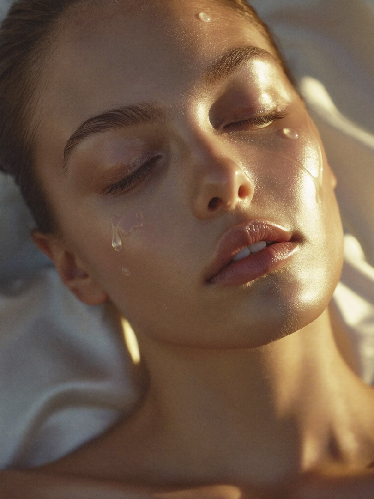
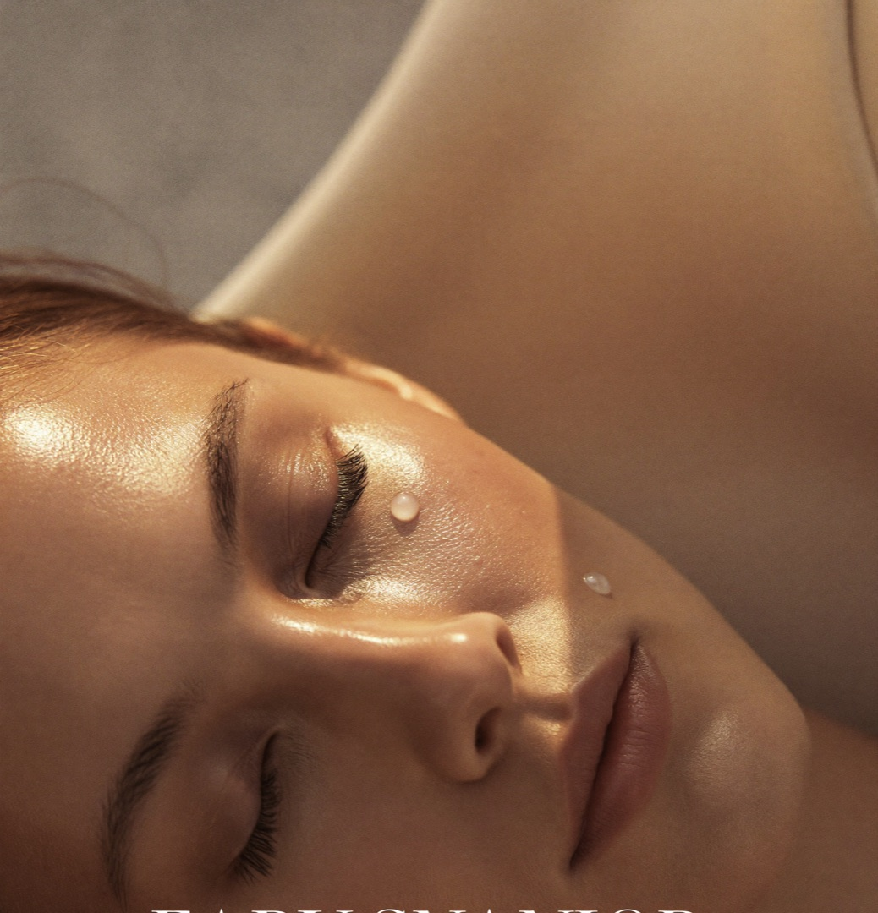
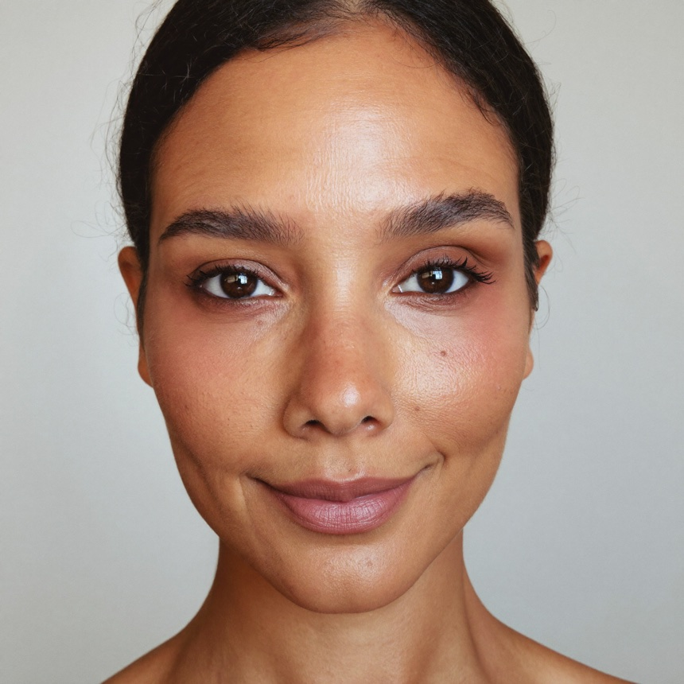
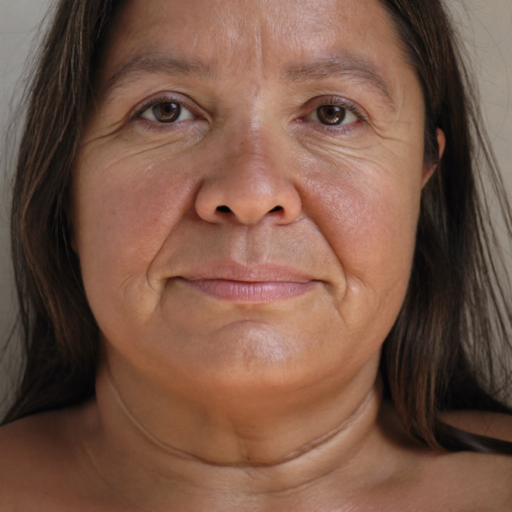
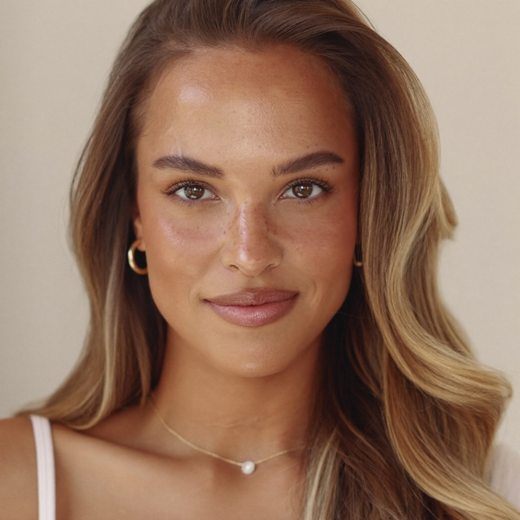

Загрузи селфи, и AI увидит, что на самом деле старит твоё лицо: отёки, тонус, кожа, дефициты. И соберёт один план, как выглядеть моложе: уход, массаж, питание, добавки. Всё в Telegram.
Разобрать моё лицо бесплатноПервый разбор бесплатно · Фото не публикуем · Без приложений
Некому взглянуть на твою молодость системно — на лицо, тело, привычки — и собрать один честный план вместо хаоса.
Компьютерное зрение и доказательный антивозраст в одном Telegram-боте. По фото AI оценивает лицо, кожу, отёки и тонус, а вместе с твоими данными и анализами — дефициты. И собирает единый план: уход, массаж, питание, добавки. Не «купи крем», а как выглядеть моложе в любом возрасте. Первые изменения по отёкам и тону заметны уже за 2–3 недели, если следовать плану.

Кожа немного обезвожена, есть признаки фотоповреждения от солнца.
Лоб: мелкие динамические линии, мышечный гипертонус.
Глаза: лёгкая отёчность, тёмные круги к утру.
Щёки: признаки купероза, снижение плотности у носогубных.
Т-зона: расширенные поры.
Главная причина: нарушен барьер кожи и не хватает защиты от УФ — отсюда меньше коллагена и хуже микроциркуляция.
Что делать: восстановить барьер, глубоко увлажнить, поднять синтез коллагена, защита от УФ и лимфодренаж от отёков.
Это реальный разбор бота. Косметологический экспресс-обзор, не медицинский диагноз.
Одно фото — и бот показывает, что происходит с лицом и что с этим делать. Три примера, у каждого своя задача.

Нарушенный барьер и обезвоженность + слабый лимфодренаж + гипертонус верхней трети + задержка воды (сон, соль). Круги и отёки — это СЛЕДСТВИЯ застоя, а не «просто усталость». Точечный крем бьёт по симптому, корень не трогает — поэтому у большинства «ничего не помогает».

Снижение синтеза коллагена и эластина + ослабленный мышечный тонус + лимфостаз + осанка. Овал плывёт СИСТЕМНО, это не «одна морщина». Кремы и редкий массаж по отдельности контур не держат — поэтому эффекта не видно.

Фотоповреждение + сбой обновления клеток + нарушенный барьер + возможные гормональные и дефицитные триггеры пигмента. Пятна — это СЛЕДСТВИЕ УФ и воспаления, а не «просто пигмент». Отбеливающий крем без SPF гоняет по кругу — поэтому «выводишь, а возвращается».
AI-анализ по фото. Косметологический разбор, не медицинский диагноз.
Хочешь такой же разбор
своего лица?
Бесплатно · 3 минуты · Прямо в Telegram
Начинается с бесплатного разбора. Подписку оформишь прямо в боте, если понравится. Отмена в один тап.
Одно фото, несколько минут — и у тебя план молодости: лицо, тело, привычки. Без скальпеля и без «купи ещё крем».
Разобрать моё лицо бесплатноСоздано компанией ALETHEIA · Поддержка: @BeBeSupport · hello@beyondbeautyconcierge.ru
Договор-оферта · Политика конфиденциальности · 18+ · Не является медицинской услугой